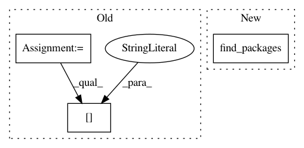

cf02b9876b9045c7f633e223903fb8a7b94c5be7,setup.py,,,#,11
Before Change
// FIXME: This works around a setuptools bug which gets setup_data.py metadata
// from incorrect packages. Ticket /
//from setup_data import INFO
setup_data = dict(__name__="", __file__="setup_data.py")
execfile("setup_data.py", setup_data)
INFO = setup_data["INFO"]
// Register Python extensions
contour = Extension(
"chaco.contour.contour",
sources=["chaco/contour/cntr.c"],
include_dirs=[get_include()],
define_macros=[("NUMPY", None)]
)
// Commenting this out for now, until we get the module fully tested and working
//speedups = Extension(
// "chaco._speedups",
// sources = ["chaco/_speedups.cpp"],
// include_dirs = [get_include()],
// define_macros=[("NUMPY", None)]
// )
// The actual setup call.
setup(
author = "Peter Wang, et. al.",
author_email = "pwang@enthought.com",
classifiers = [c.strip() for c in \
Development Status :: 5 - Production/Stable
Intended Audience :: Developers
Intended Audience :: Science/Research
License :: OSI Approved :: BSD License
Operating System :: MacOS
Operating System :: Microsoft :: Windows
Operating System :: OS Independent
Operating System :: POSIX
Operating System :: Unix
Programming Language :: C
Programming Language :: Python
Topic :: Scientific/Engineering
Topic :: Software Development
Topic :: Software Development :: Libraries
.splitlines() if len(c.strip()) > 0],
data_files=[("chaco/layers/data",
["chaco/layers/data/Dialog-error.svg",
"chaco/layers/data/Dialog-warning.svg",
"chaco/layers/data/range_selection.svg"])],
package_data={"chaco": ["tools/toolbars/images/*.png"]},
description = "interactive 2-dimensional plotting",
long_description = open("README.rst").read(),
download_url = ("http://www.enthought.com/repo/ets/chaco-%s.tar.gz" %
INFO["version"]),
ext_modules = [contour],
include_package_data = True,
install_requires = INFO["install_requires"],
license = "BSD",
maintainer = "ETS Developers",
maintainer_email = "enthought-dev@enthought.com",
name = INFO["name"],
packages = find_packages(exclude=[
"docs",
"examples",
"examples.zoomed_plot"
]),
platforms = ["Windows", "Linux", "Mac OS-X", "Unix", "Solaris"],
ssh_server = "code.enthought.com",
ssh_remote_dir = "/www/htdocs/code.enthought.com/projects/chaco/",
tests_require = [
"nose >= 0.10.3",
],
test_suite = "nose.collector",
url = "http://code.enthought.com/projects/chaco",
version = INFO["version"],
zip_safe = False,
)
After Change
include_package_data = True,
install_requires = info["__requires__"],
license = "BSD",
packages = find_packages(),
platforms = ["Windows", "Linux", "Mac OS-X", "Unix", "Solaris"],
zip_safe = False,
)
In pattern: SUPERPATTERN
Frequency: 3
Non-data size: 3
Instances
Project Name: enthought/chaco
Commit Name: cf02b9876b9045c7f633e223903fb8a7b94c5be7
Time: 2011-06-15
Author: ischnell@enthought.com
File Name: setup.py
Class Name:
Method Name:
Project Name: r9y9/wavenet_vocoder
Commit Name: ee5e88bc0446986f6bc74080835e0566856d0e79
Time: 2019-09-07
Author: zryuichi@gmail.com
File Name: setup.py
Class Name:
Method Name:
Project Name: chartbeat-labs/textacy
Commit Name: 03e098c84a14309b87528ef21ccb5e4f834de5f5
Time: 2020-03-01
Author: burtdewilde@gmail.com
File Name: setup.py
Class Name:
Method Name: